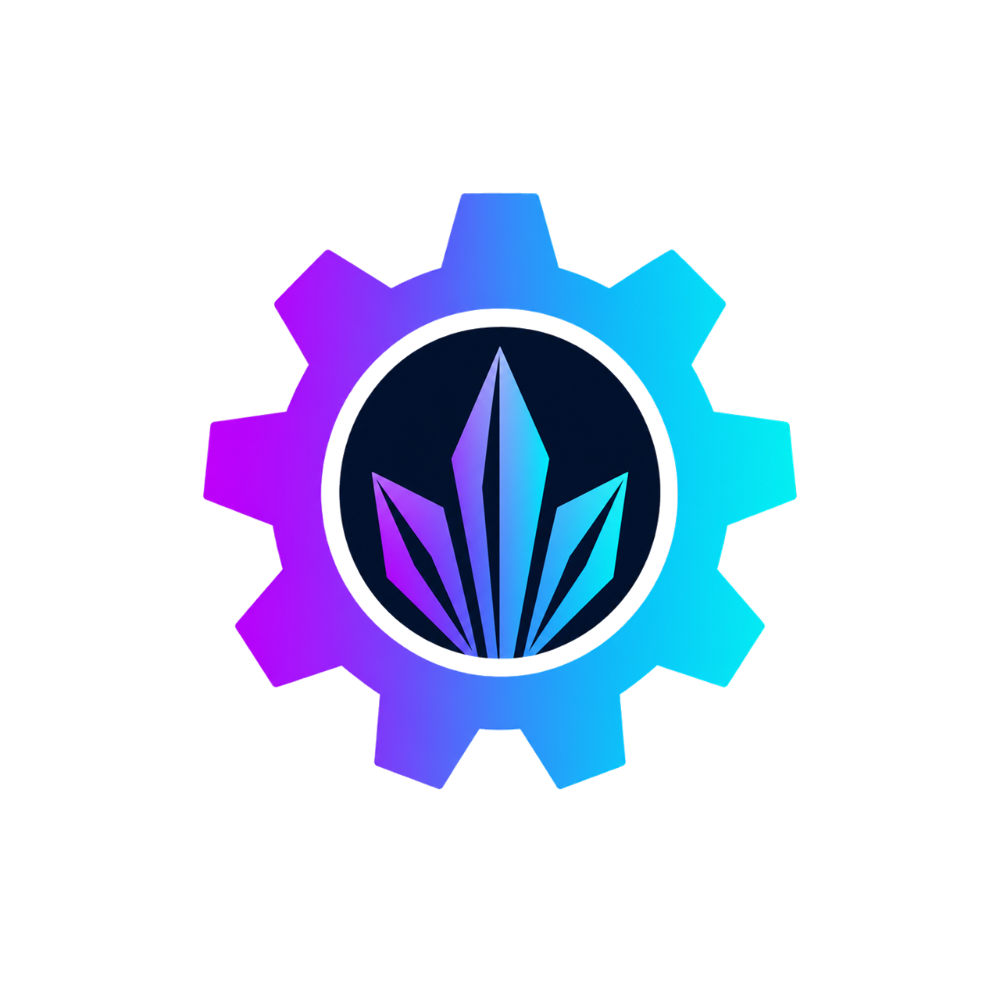

BrProject — Load Screen
Splash moderno · Start silencioso · Encerramento limpo
Java
25
Interface
Swing
Render
Graphics2D
Start.exe
C# / .NET
Plataforma
Windows
Autor
Dev A.L.N
Sobre
Pack de integração para a source BrProject (ext.mods.security) que troca o bootstrap com console por um load screen profissional e um Start.exe silencioso no Windows.
| Módulo | Função |
|---|---|
| Load Screen | Splash animado com marca, barra de progresso e assinatura |
| Start silencioso | Start.exe sobe com javaw — sem janela preta de CMD |
| Encerramento limpo | “Fechar tudo” para Login/Game e a JVM do launcher |
Stack técnica
Interface e load screen
| Camada | Tecnologia | Função |
|---|---|---|
| Runtime | Java 25 (OpenJDK) | Processo do launcher / splash |
| Interface | Java Swing (JWindow, JPanel, JFrame) | Janelas |
| Renderização | Graphics2D | Logo, título neon, barra, assinatura |
| Efeitos | LinearGradientPaint, RadialGradientPaint, AlphaComposite | Glow / shimmer |
| Animação | javax.swing.Timer (~16 ms) | Órbitas e progresso |
Bootstrap e processos
| Camada | Tecnologia | Função |
|---|---|---|
| Processo | javaw.exe | Início sem console |
| Wrapper nativo | C# / .NET Framework (csc /target:winexe) | Gera Start.exe a partir de StartSilent.cs |
| Encerramento | ProcessHandle + taskkill /F /T | Encerra só java / javaw do BrProject |
Recursos
Load Screen (BootSplash)
- Moldura escura com borda pulsante
- Título BR PROJECT + logo da engrenagem
- Assinatura Dev ⩽ A.L.N/⩾ (nome em destaque)
- Animação em órbita e progresso
0→100% - ~2,8 s de load + pausa em 100% antes de abrir o painel
Interface (MainFrame)
- Shell Swing customizado (
ModernUI,CardLayout) - Dashboard Login / Game Server
- Diálogo de saída: Fechar tudo · Só esconder · Cancelar
- Sons opcionais de start / shutdown (WAV)
Instalação
1. Copiar fontes
# ARQUIVOS_MOD → source BrProject
cp ARQUIVOS_MOD/java/ext/mods/security/gui/BootSplash.java <source>/java/ext/mods/security/gui/
cp ARQUIVOS_MOD/java/ext/mods/security/LicenseInit.java <source>/java/ext/mods/security/
cp ARQUIVOS_MOD/java/ext/mods/commons/util/JavaProcessInspector.java \
<source>/java/ext/mods/commons/util/
Aplique o MainFrame em DIFFS/02-... ou MainFrame_PATCH.txt. Copie as imagens para Brproject_Distribution/images/.
2. Compilar Java
gradlew.bat jar copy libs\server.jar Brproject_Distribution\libs\server.jar
3. Gerar Start.exe silencioso
ARQUIVOS_MOD\tools\compilar-StartSilent.bat
4. Validar
- Abra
Start.exe→ splash → painel (sem CMD) - Escolha Fechar tudo → nenhum OpenJDK residual
Guia completo: LEIAME.txt
Arquivos principais
| Arquivo | Função |
|---|---|
| BootSplash.java | Load screen |
| LicenseInit.java | Entrada: splash → MainFrame |
| MainFrame_PATCH.txt | Diálogo de saída |
| JavaProcessInspector.java | Limpeza de processos |
| StartSilent.cs | Start.exe silencioso |
Descrição para YouTube
Bloco para copiar e colar
BrProject — Load Screen + Start silencioso Desenvolvido por Dev ⩽ A.L.N/⩾ para o BrProject • Splash com logo, neon e barra 0→100% • Assinatura Dev ⩽ A.L.N/⩾ • Start.exe sem janela CMD • Fechar tudo encerra Login/Game + JVM Stack: Java 25 · Swing · Graphics2D · javaw · C#/.NET · ProcessHandle #BrProject #L2 #Java #Swing #LoadScreen #Launcher #DevALN